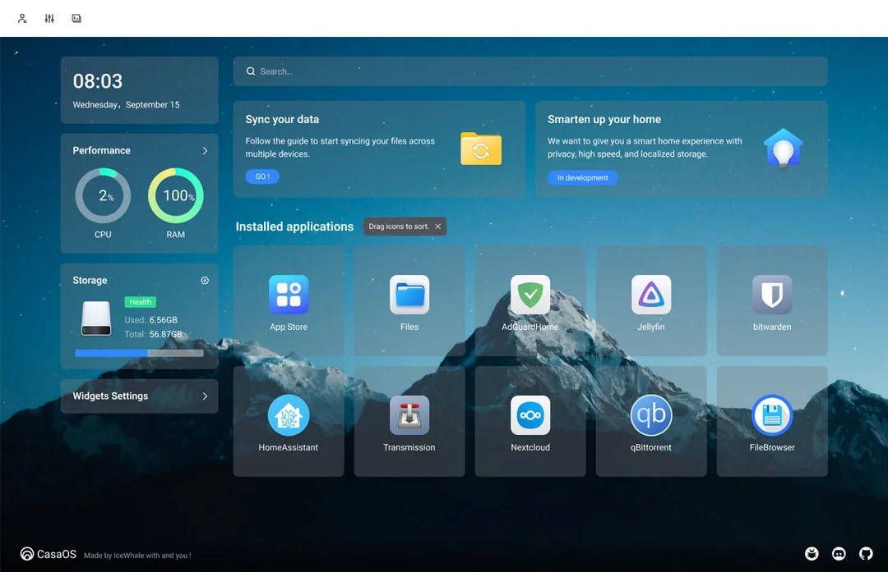
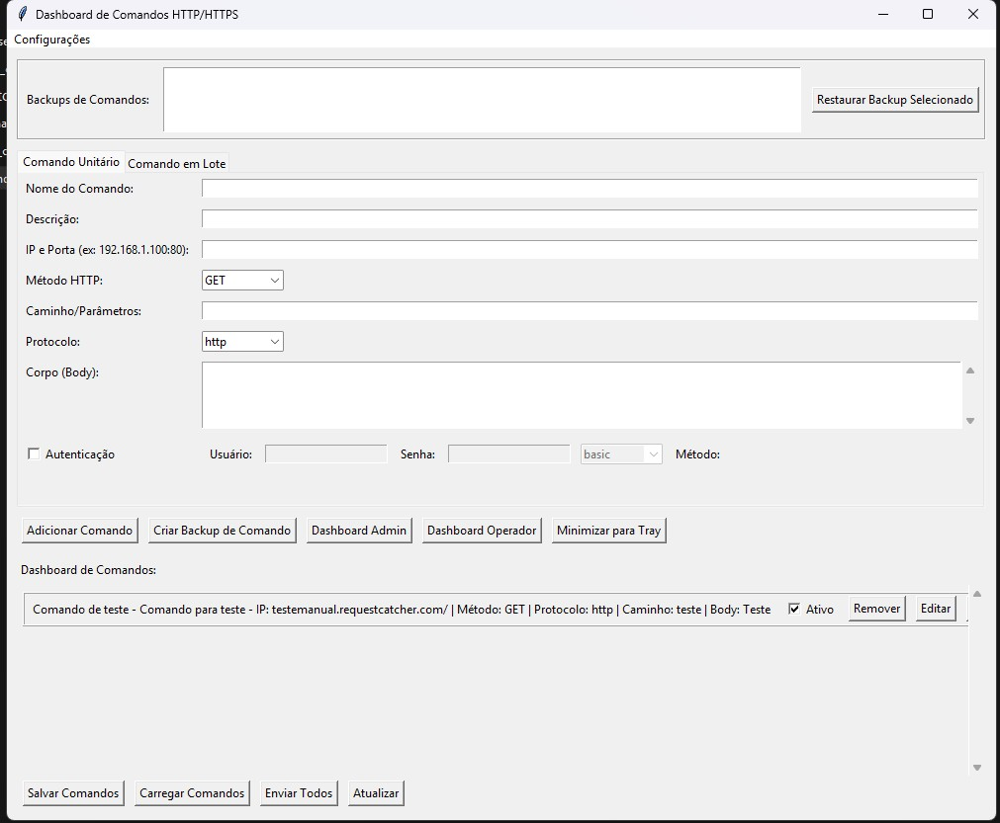
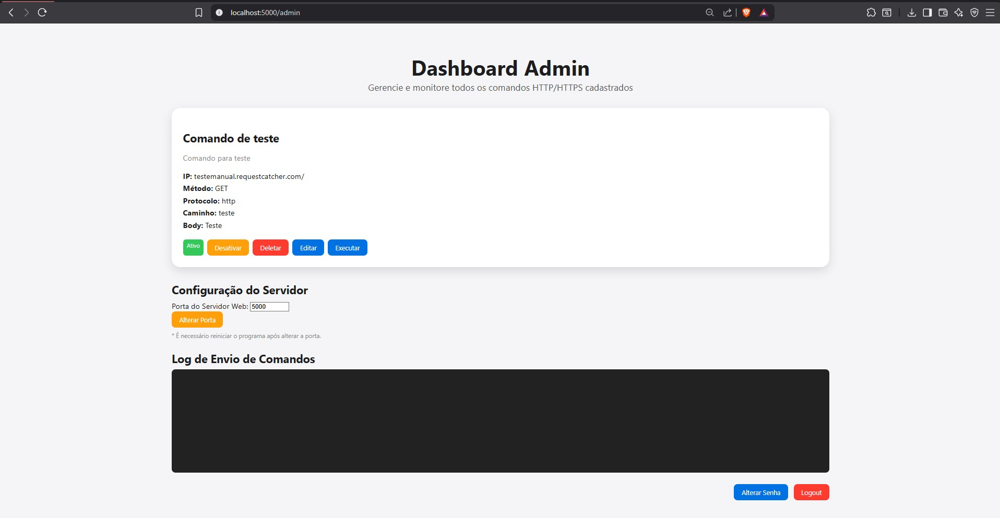
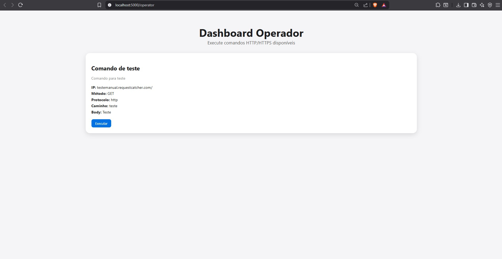

Estudante de Ciência da Computação
Projeto pessoal: Estou implementando em casa um home server no qual me permitirá armazenar de maneira segura meus arquivos, fotos, vídeos e entre outros. Além disso, terei a possibilidade de acessar esses arquivos de maneira remota, o que me permitirá acessar meus arquivos de qualquer lugar do mundo. O projeto está em fase de testes para que eu possa escolher o melhor hardware custo beneficio no qual eu já adiquiri. Este projeto também me permite outras funcionalidades, como criar uma VPN para acessar minha rede e arquivos, um home assistant e um bloqueador de anuncios direto em minha rede.

Projeto de trabalho: Em minha passagem pela empresa Aeon Security eu implementei um aplicativo de envio de comandos http ou https, no qual desenvolvi utilizando inteligência artificial. Ao me deparar com a necessidade de enviar comandos http ou https para os equipamentos de segurança eletrônica, tal como para acionar cornetas, criei um aplicativo em python no qual roda em um servidor com duas páginas web de dashboard, uma voltada ao administrador no qual permitia editar os comandos e testar e um dashboard voltado para o usuário final para acionar os comandos e acionar as cornetas.


